柬埔寨自助游（2）
黑狼语录：
—— 和去年的泰国游比较，我更喜欢这次的柬埔寨游。因为又看到了我小时候的那种无拘无束、融于自然的生活状态。只是旅游的时间太短，遗憾自己无法参与其中。
这次柬埔寨游的计划是：时间是从 1 月 25 日到 2 月 4 日；路线是从北京转机广州，飞到暹粒，从暹粒到西哈努克，再到金边，最后从金边返回。在暹粒住 4 天，1 月 29 日金边住 1 天，然后在西哈努克的一个小海岛上住 4 天，2 月 3 日返回金边住 1 天。
在北京的时候，胡有理就安排好了住宿。
昨天在宾馆，购买从暹粒到金边的车票时（宾馆代买），计划还是稍稍改变了一下，1 月 29 日坐sleeping bus 直接到西哈努克，距离只有 500 多公里，却要 11 个小时，金边的宾馆改在了大巴上睡了，遗憾的是宾馆的费用已经支付过了。
昨天跑了一天，还挺累的，今天晚点儿出发，大圈。
我和大包子聊天的时候，说我小时候的生活状态和那些柬埔寨孩子非常相似，只是我的老家没有游客。大包子明显兴趣不大，只是偶尔问问那时河里面的鱼是不是很多等等她关注的问题，也许她永远也无法体会到我当年的那种贴近自然的状态。
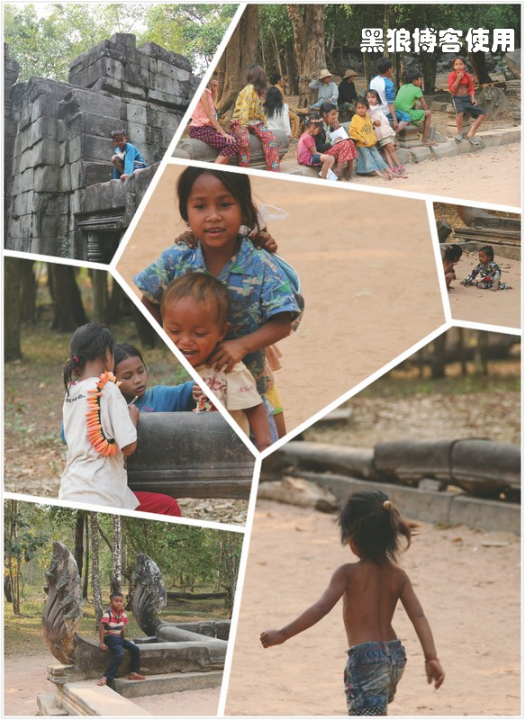（小孩子很有我小时候的风采）
柬埔寨的小孩子会向游人要糖果或者兜售小商品，但你明显能感觉到他们那种简单的快乐、旺盛的精力。
1 月 27 日，在吴哥的第二天。今天游玩的路线是吴哥的大圈，昨天的团员只剩下了 5 个，其他人都玩过大圈了。不看日出的话，就没必要早起了。早 9点 30 分出发，还是继续用昨天的司机，包车 35 美金，约 40 公里，人少，换了辆普通小轿车。
在吴哥买的是三天的通票，40 美金一张，12 岁以下的小孩半票（这点比国内人性化），然后基本不用再购票。
第一站圣剑寺，12 世纪的建筑寺庙，占地 700*800 平方米，远比照片要恢弘大气，里面很容易迷路。这里是印度教的风格，崇尚生殖。老胡认为很邪恶，我认为很正常，因为我们两个理解的角度不同，她认为印度教是崇尚生殖过程，我认为是崇尚生殖结果。
在寺里面恰好碰见有个导游笑着对一群台湾游客说：“那个东东，男同志可以多摸几次，摸一下就可以生一个小孩，如果我带大陆游客，我就会让他们只摸一次，因为他们最多能生一个小孩。” 我听到后，哈哈大笑，我对导游说：“这么说，我现在一次也不能摸了。” 大家都哈哈大笑，大包子使劲地掐我，说我笑得真是难看。（当时人多，没有照相）
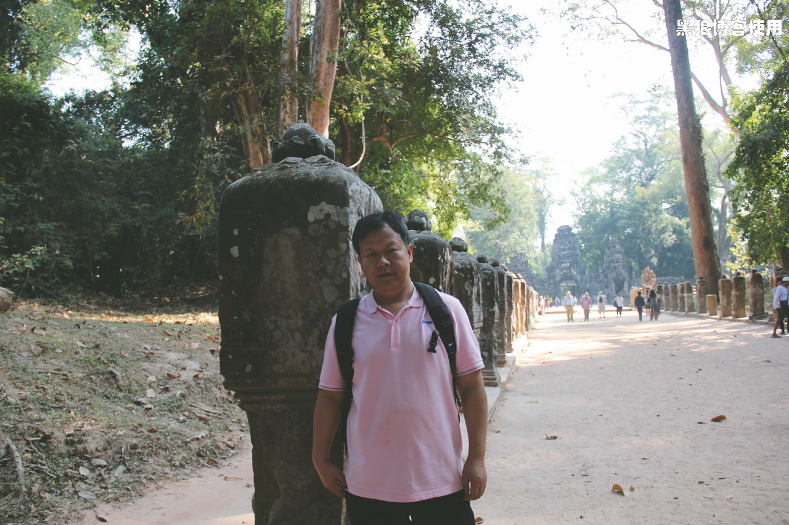 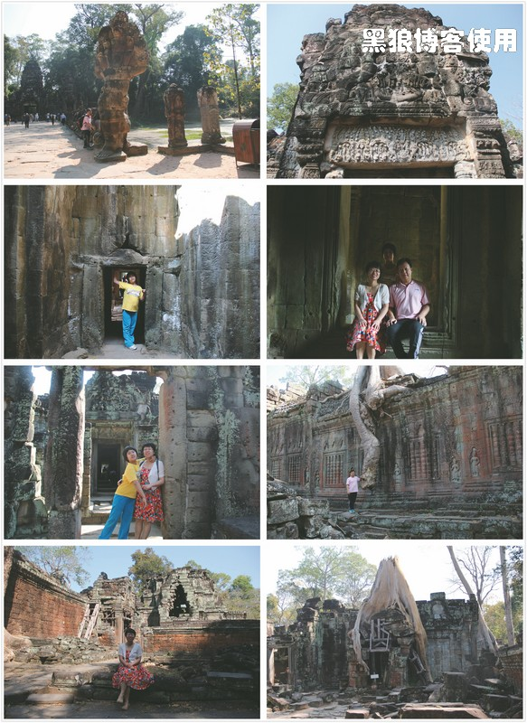这是一片很大的建筑群，据说被遗忘这里很多年。到处是高大的树木，其中有些巨大的树根长在了房子上，当年应该是人迹罕至的地方。
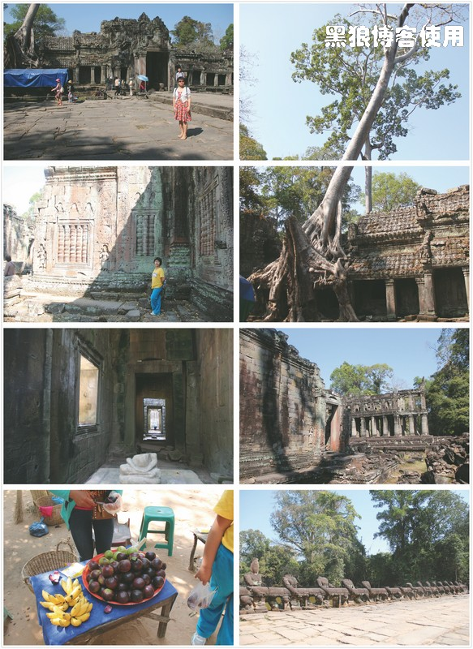成片建筑都是用石头垒成的，可以想象当年的辉煌。
12:30 左右，到达第二站龙蟠水池，曾经的圣水，泡在里面可以治病救人，现在估计没这个效果了吧。
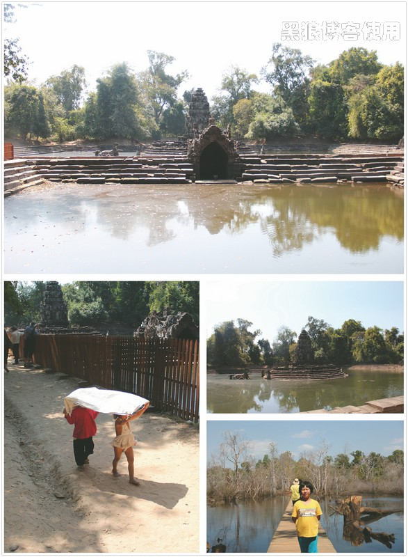13:00 左右，塔萨寺。据说有一个门已经被一颗巨大的树给包裹住了，可惜没有去走那个门。胡有理和大包子只顾着看旅游攻略了。门口的红椅子就是检票点，呵呵，这个是相对“豪华”的。
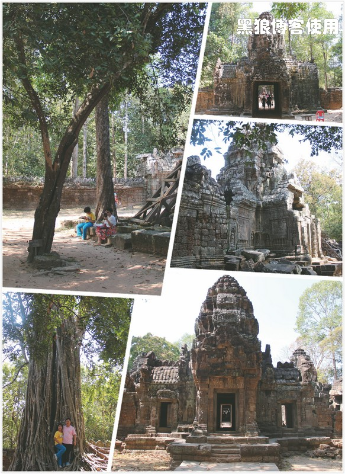14:00 大家都饿了，跟司机说了一下，来到了一个风景秀丽的餐馆。价格跟北京差不多，啤酒 4 美金，小罐的 2 美金，菜基本是 6 美金，这在当地应该是比较贵的地方了，菜量很大。这个地方也是我在柬埔寨去过的最接近中国菜做法的地方了。
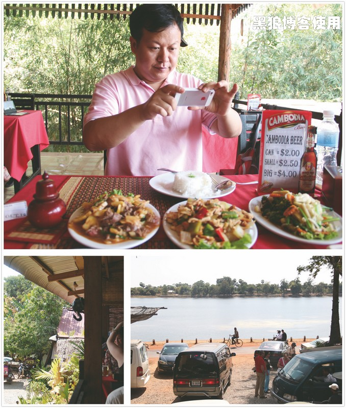15:10 到达东梅奔寺，据说这座寺庙是建在湖心岛上的，不过一点水也没看见，就更没有找到岛了。寺中有 4 只神象，与真象是同比例的。新买的遮阳帽， 12 美金买了 2 个，老胡还是不擅长砍价的，认为这种行为很残忍。
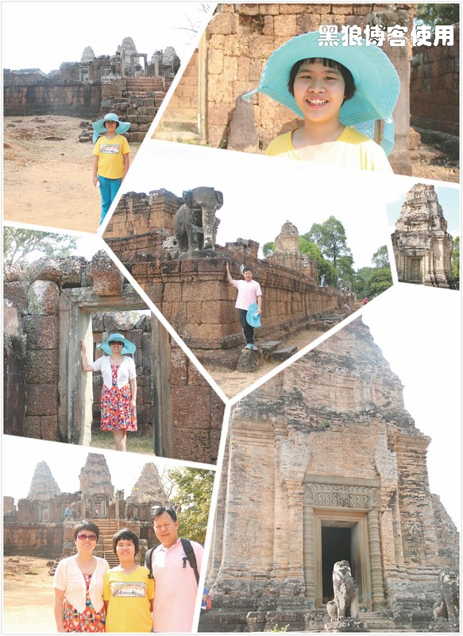吃东西永远是大包子最快乐的事情。
柬埔寨景点旁的商品价格并不比超市或者市场贵，在柬埔寨价格一般能砍掉一半左右。大椰子 3000 瑞尔一个（1 美金=4000 瑞尔，1 美金=7 人民币）。
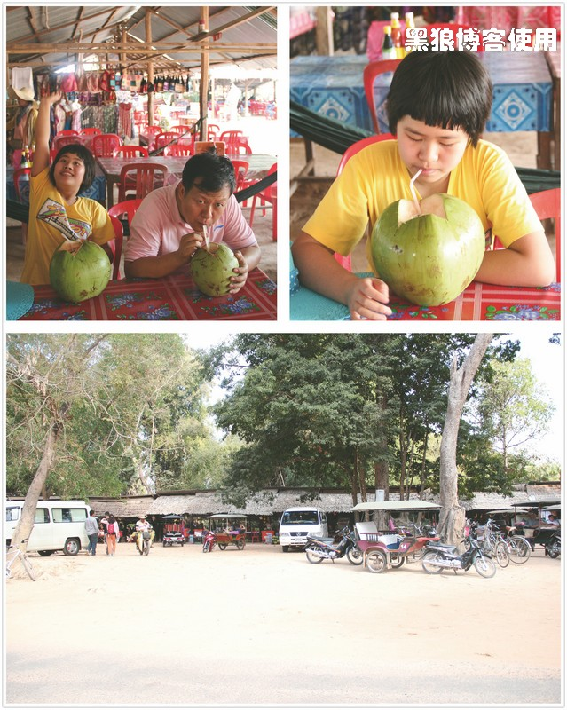16:40 比粒寺，是皇家的火葬场，这里的建筑明显粗糙了不少。台阶很高很陡峭，真不知道当年的棺材如何搬运上去的。
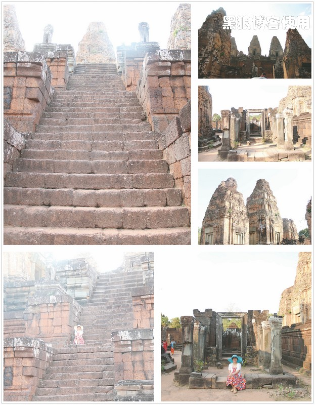17:30 到了豆蔻寺，这里很小，破损的只剩下主塔了，几分钟就转完了。
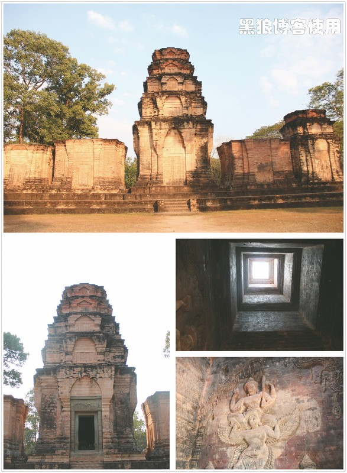本来还想看日落的，可惜时间还早，大包子嚷嚷着要去吃意大利的披萨饼，应该是上午看攻略的结果。看了一天的残垣断壁，红黑色巨石，大家都有些审美疲劳了。
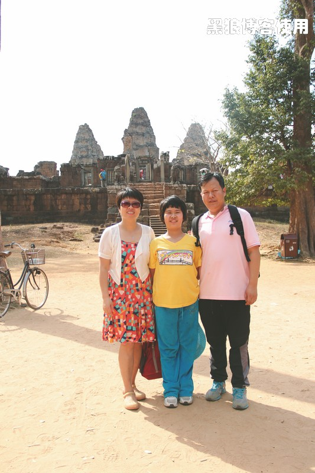